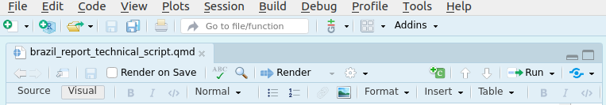
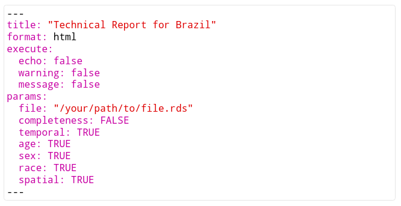
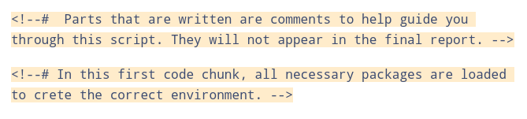
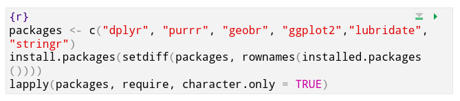

Technical Report Brazil
The technical report will include:
The completeness of the data
temporal distribution
Demographic profiles, including: Age, sec, race
Spatial distribution
Instructions on how to use the automated report:
- Download the file above.
- Open the file in RStudio.

- In case the R studio editing mode is in “source”, switch it to “visual” in the upper left corner.
 - The first part of the document is called a YAML header:

This is the only part of the code that you need to modify. Under ‘file’ you have to specify the filename, including its path, of the file that includes the data for the automated report.
You can change the title of the report in ‘title’. And you can decide which graphs should be included by setting the name of the graph to TRUE (graph will be shown) or FALSE (graph will not be shown). - Throughout the document you can find comments, delimited by “”. These comments explain the document in case you want to learn. These will not be displayed in the final report, so there is no need to modify them.
 - The most important part of the document are the code blocks which look like this:

These code blocks define the graphs. They will also not be shown in the final report. If you want to modify a graph you can do it by modifying the code. Some changes, like changing the colors, are easier than others. We encourage you play with the code to learn! - Finally, to create the document you need to click on the “render” button in the top.